Opportunity
Blinkko is a shoulder-worn social AI companion — hardware plus App — for urban young people. The product should turn going out into exploring the city, making a connection, and showing who you are.
I joined as founding product designer in June 2026, owning software design with the software team: user research, product strategy, information architecture, the UI system, interaction, and shipping the App alongside the hardware for the September launch.
Early traction
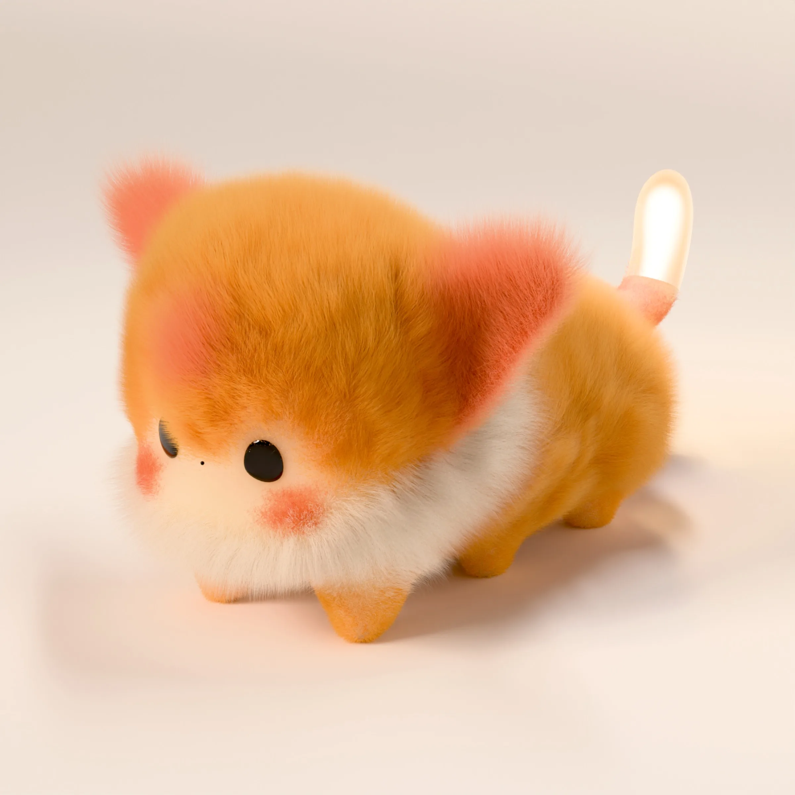
Insight
If other people can read the glow and the touch, the opening stays low-risk — so you keep wearing it, and it keeps sensing. Wear, sense, understand, respond: that loop is what the whole product is built on.
Research with Gen Z pushed the interface away from settings-speak, toward the way they actually talk. The first session should introduce a companion, not configure a device.
System
From information architecture to a shared component library. After I took over, I folded scattered functions into five spines and a shared component set, and led both. The shipped App is four tabs — Explore, Home, Friends, Profile — with Home as the hub. Hardware is optional: light, bump, and three-tap check-in appear when a session is live.
Workflow
First drafts come from a skill the team already had, which builds a PRD out of design-system components. My time goes where judgment matters: the flow first, then the pixels.
- PRD lands Written by the founder.
- Skill drafts the UI A first pass, built from design-system components.
- I take over I rework the flow first, then the pixels.
- Launch Gaps filled screen by screen, on the launch schedule.
Principles
Information architecture
Home as the hub for five spines. Onboarding leads into the Home hub; from there Homepage, Friend loop, City Explore, and Pet growth are the four you return to every day. Settings sits beside them as a utility, not a spine. Mapped in full, the five spines come to 96 touchpoints; the diagram shows the top level.
- Device status
- Quick controls
- Primary navExplore · Home · Friends · Profile
- Profile entry
- Find people
- Bump
- Chat + share
- Plan an eventAccept · Decline · Expired
- Relationship history
- Map + search
- Place detail
- Create GlowPublish · Save draft
- EventsBrowse · Host · Join
- Navigate + check in
- Care + feedback
- Light + volume
- Virtual wardrobe
- Earn + unlockLumi · Items · New outfit
- Monthly reportReview · Share · Save
- Edit profile
- Blinkko devices
- Notifications
- Privacy + safety
- Account + help
Five loops
Onboarding, Homepage, Friend loop, City Explore, Pet growth — in that order. Screens below are the landed UI, autoplaying; tap to step.
Onboarding
Welcome: “a light born from what you feel…” then let’s go. Sign-in is Apple / Google first; avatar and username finish the free-app path. Once you are signed in, the vibe quiz lets Blinkko get to know you. The permission stack is no longer required up front.
Welcome → sign in
Deep dive · Onboarding
Onboarding had to work for three kinds of people who arrive with very different levels of commitment: someone who has just unboxed the hardware, someone who came in from a quiz on social media, and someone who found the App in the store.
AHardware owner
Just unboxed the device. High commitment, so they can be asked more.
- Unbox the hardware
- Download the App
- Welcome + sign up
- Permissions
- Bluetooth pairing
- Meet Blinkko (ceremony)
- Full quiz, 5 questions
- Name + customize
- Home
BSocial media funnel
Arrives from a quiz ad. No device yet, and may never get one.
- “What Blinkko are you?” quiz ad
- Mini quiz, 3 questions, no login
- Result preview: “sign up to keep”
- Download the App + sign up
- Full Blinkko reveal
- Name + customize
- Pair a device, or skip
- Home
CApp store discovery
Found the App on their own. Needs a reason to stay before a form.
- Hook slides
- Mini quiz, 3 questions
- Blinkko preview
- Sign up: email, Apple, Google
- Explore without hardware
- Pair later, from settings
- Home
First version
The first version was designed around the hardware owner: 14 screens in three phases, each with a different job. I had the whole sequence wireframed and tested its pacing before any visual design.
Phase AFunctional setup
As fast as possible. Don’t annoy people.
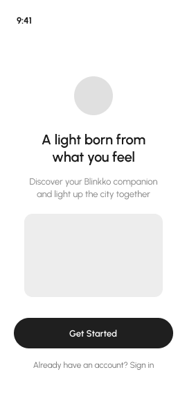
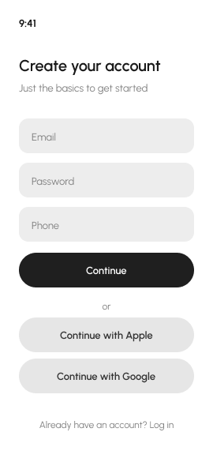
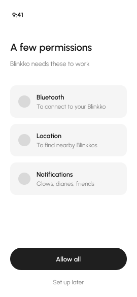
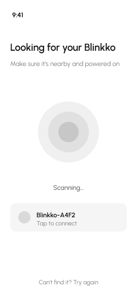
Phase BThe encounter
The product’s first impression. It has to make people go “wow”.
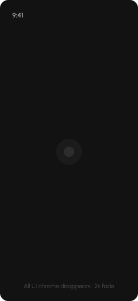
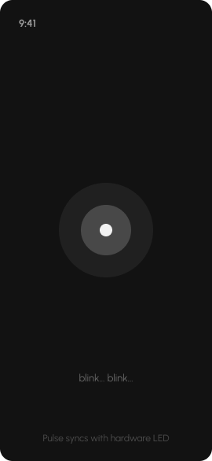
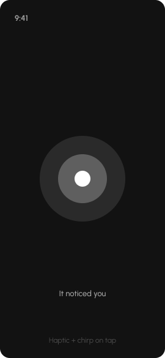
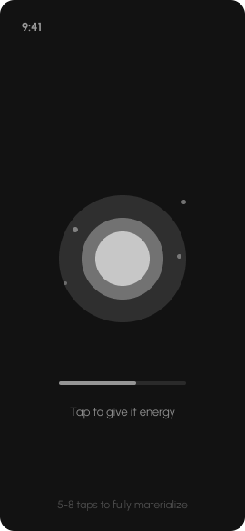
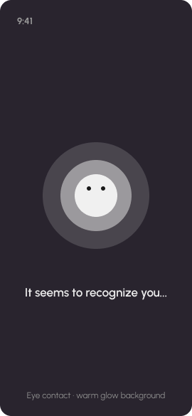
Phase CBonding
Building the relationship. It should feel warm.
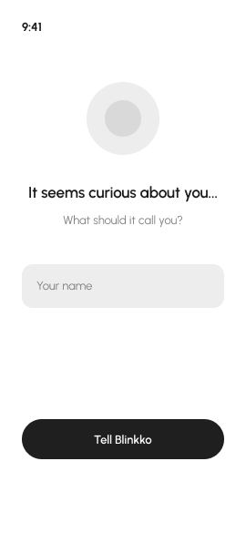
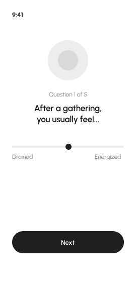
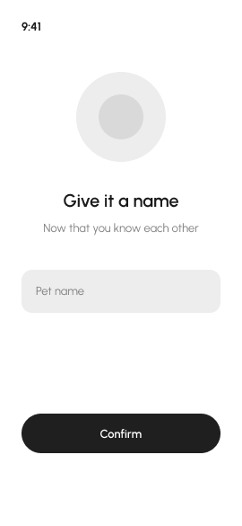
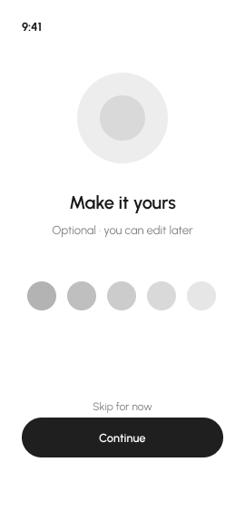
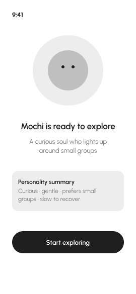
What the review surfaced
Testing three ways in
The review left an open question: what should a new person be asked to do first? I took three answers to that question to 30+ target users as three onboarding schemes: one led by the purchase, one led by a free look around before owning anything, and one led by a personality quiz.
The quiz-led scheme
In testing, the quiz was the first thing a new person did. In the shipped build it sits one step later: sign-in is a single tap with Apple or Google, not a form, and the quiz follows straight after, so the result belongs to an account from the start. It is the moment Blinkko gets to know you, and the first place the App becomes personal: two details about you, six questions written the way the audience talks, and a result with a card made to be shared.
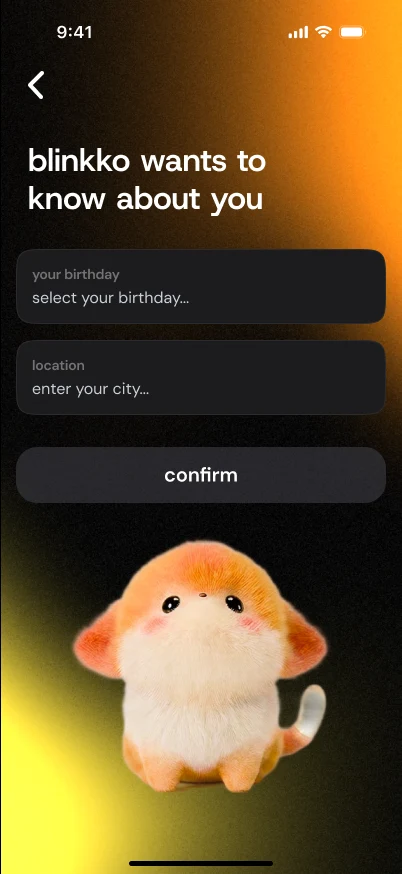
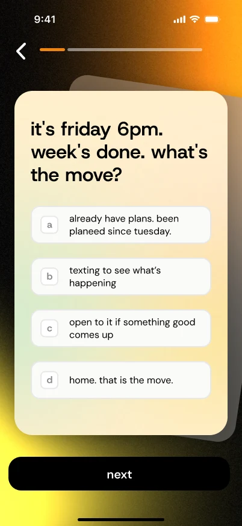
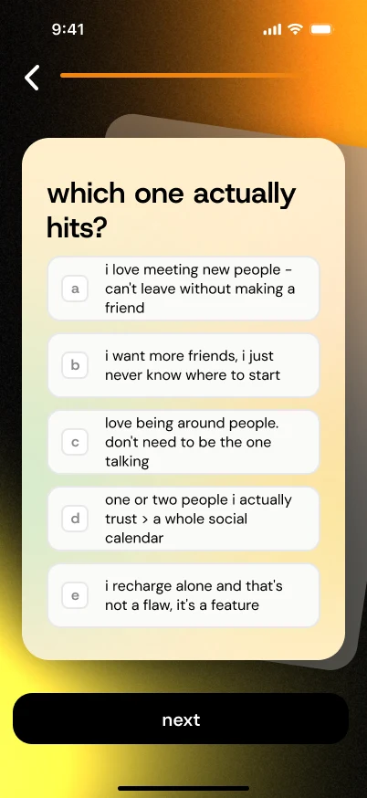
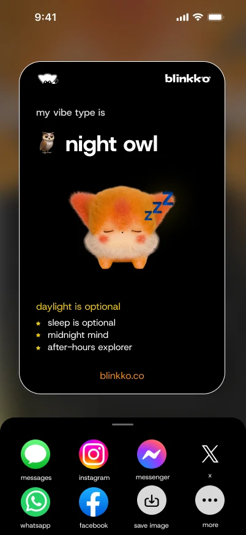
The result: one of five vibe types
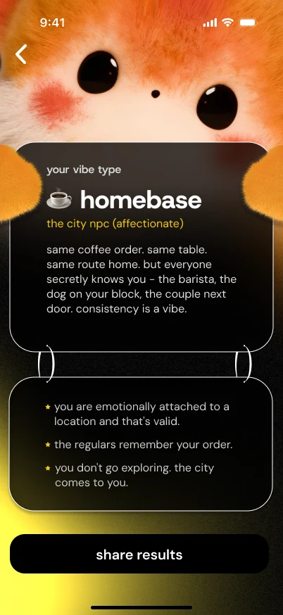
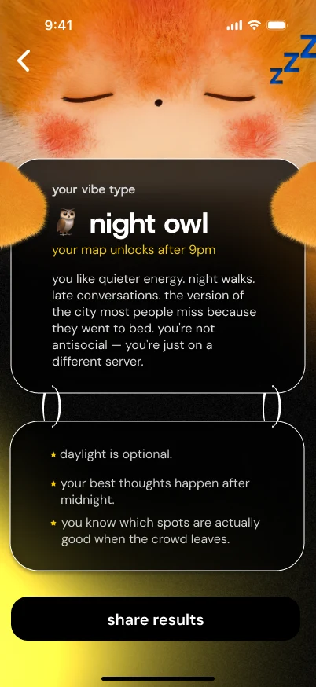
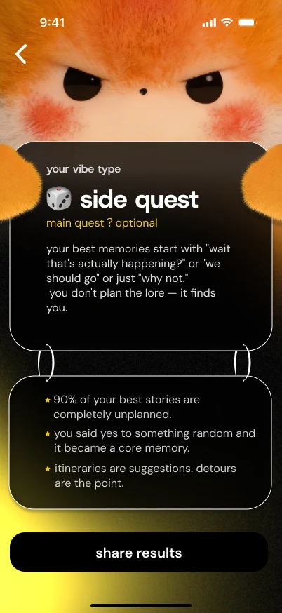
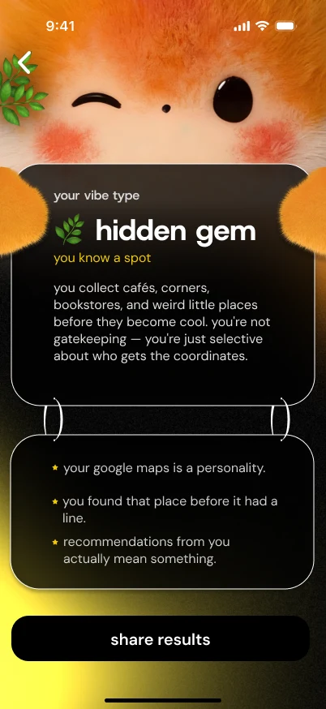
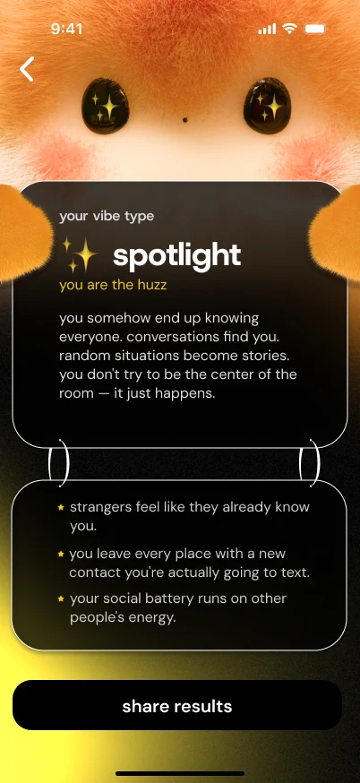
Hardware stayed optional throughout: pairing moved out of onboarding, so the map and the social features work before anyone owns a device.
Homepage
Hallway greetings from the App — “sup, kai”, “yo, kai”. Light and volume open as overlays on that same character, not separate settings pages.
Home → light overlay → volume overlay


Friend loop
Chats, Send Glow, then hardware Bump: two devices meet, “a new encounter,” then the contact sheet.
Chats → Send Glow → Bump

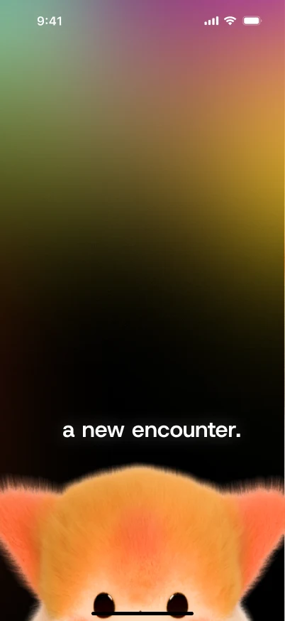
City Explore
The map tab: discovery, events in town, Glow create, posts, and phone check-in. Everything sits on one map, not a second app.
Map → events → create Glow

Pet growth
The companion grows in the App in two places. The Lumi shop for outfits: preview, spend, confirm, owned. And the monthly recap, where the tags from your month drop onto the city.
Shop → purchase → owned


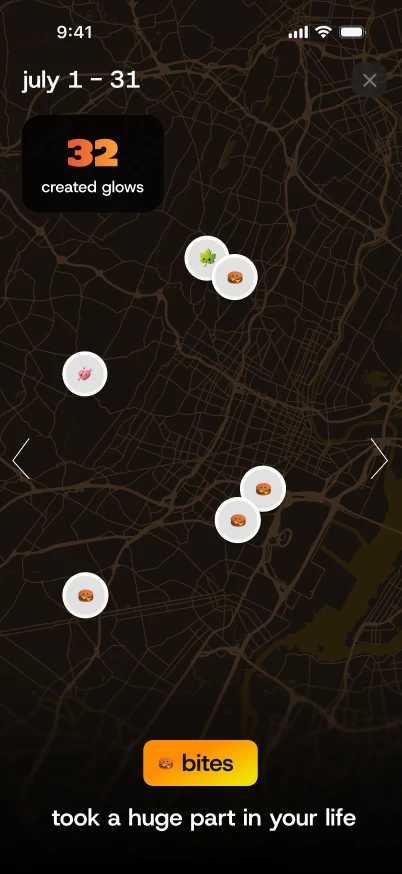

Report intro → tags drop in
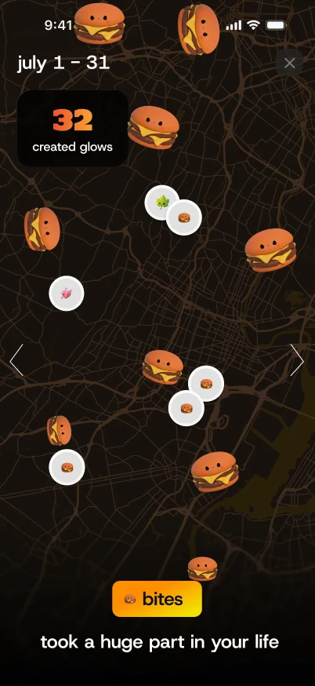
UI component library
The shared library in the file is four groups — foundations & Glow, controls & navigation, cards & feedback, social & companion. Shown here in the order the system is built: Type → Character → Core UI → Cards → Home → Place → Friends. Used across onboarding, Home, Friends, Explore, and Glow. Open a board to see it at full size.
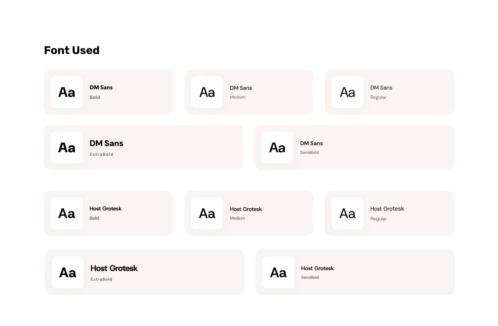
TypeDM Sans for UI copy. Host Grotesk for spoken headlines.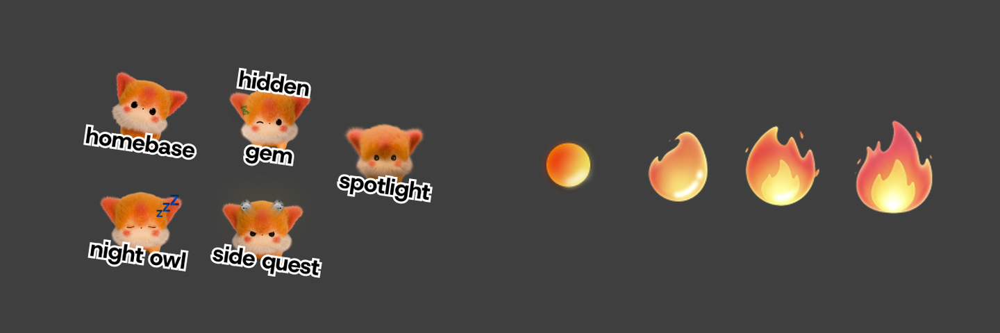
CharacterPet states on Home, plus intimacy from friend profiles. Core UIButtons, hardware controls, tabs, and Glow marks from the live variant set.
Core UIButtons, hardware controls, tabs, and Glow marks from the live variant set.
 CardsEvent cards and namecards — default, waiting, accept.
CardsEvent cards and namecards — default, waiting, accept.
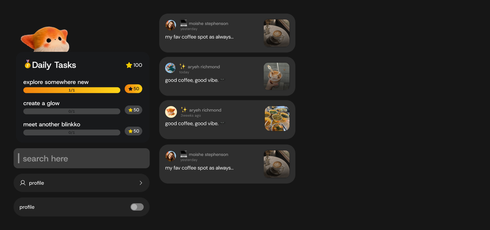
HomeDaily tasks, Glow list, search, and settings rows. PlaceLocation, Glow edit, and map sheets.
PlaceLocation, Glow edit, and map sheets.
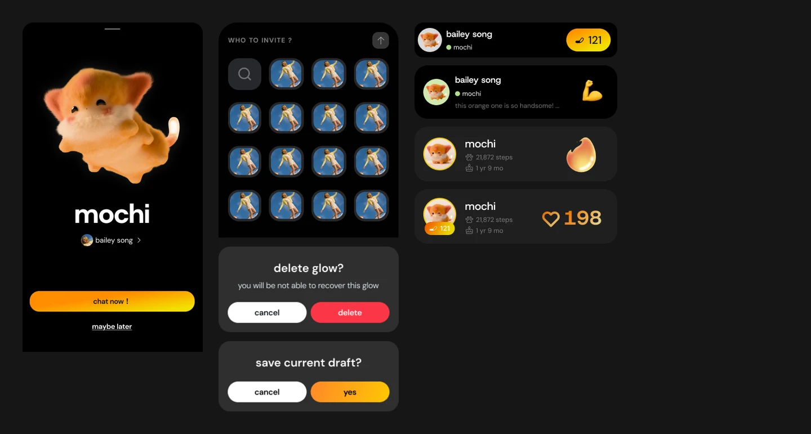
FriendsBump sheet, invite, friend cards, and popovers.Hardware–software loop
The launch tested that loop end to end: what the shoulder shows, what the device senses, what the App understands, and how both respond.
What we learned
On site it was clear: plenty of people wanted to wear it and change the light. But ask what they could play right now, and almost everything came from users themselves — there wasn’t enough to play early on.
Since launch I’ve pushed a single-player, gamified exploration to MVP, setting requirements, schedule and sign-off with game design, marketing and engineering.
How the team worked
Three teams, one product. Each side owned a clear contract, so the shoulder and the App always told the same story.
Launch
Blinkko launched in San Francisco in September 2026. Once the software was ready, I flew back to the US from China with the team and ran demos on site, showing people how the App and the companion on the shoulder work together.